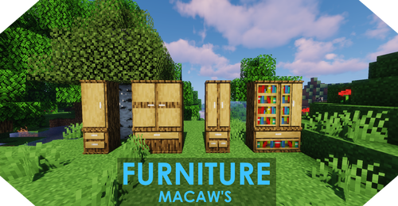

Macaw's Furniture
Модифікація додасть до майнкрафту меблі у ванільному стилі з якісними моделями.
На даний момент мод містить 45 предметів, але ви зможете поєднувати меблі між собою, створюючи нові варіанти.
Встановлення:
1. Завантажити мод
2. Встановити Forge (Якщо не встановлений)
3. Розпакувати мод в папку mods
Приклад: C:/Users/(ваш профіль)/AppData/Roaming/.minecraft/mods
(Шлях може відрізнятися в залежності від того, який лаунчер у вас)
4. Готово! Можна грати!